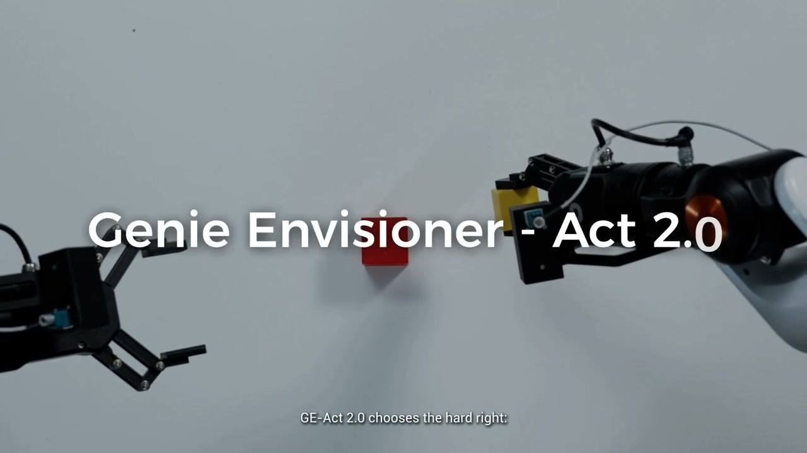
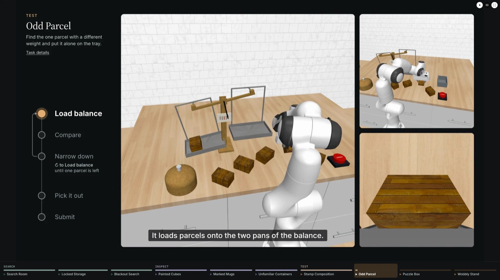

GE-Act 2.0
World-action models, 2026
Pretraining a world-action model at scale.
Scaling co-training from 300 to 30,000 hours of real-robot data substantially improves zero-shot success on 100 real-world tasks, with real-time control at 30 Hz.
First author · Technical report, AgiBot Research
paperproject

RoboQuest
Embodied agents, 2026
Can physical agents search, inspect and test?
Ten mobile-manipulation tasks where the answer can only be found by interacting with the scene. The best frontier model succeeds in 23% of episodes.
First author · Under review at ICLR 2027
paperproject